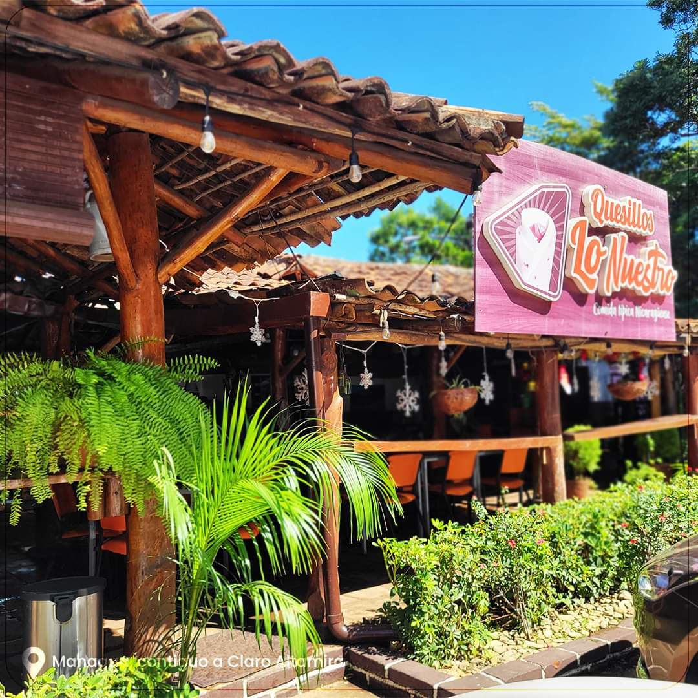

{% extends "layout.html" %}

{% block title %}
  Homepage
{% endblock %}
{% block extra_head %}
<style>
.large-logo {
    max-width: 100%; /* El logo ocupará casi toda la pantalla */
    height: auto; 
    animation: bounce 2s infinite; /* Animación de rebote */
    margin: 0 auto; 
}

@keyframes bounce {
    0%, 20%, 50%, 80%, 100% {
        transform: translateY(0);
    }
    40% {
        transform: translateY(-20px); 
    }
    60% {
        transform: translateY(-10px);
    }
}

.card {
    border: none;
    border-radius: 20px;
    background-color: #ffffff;
    padding: 2rem;
}

.card-title {
    font-size: 3rem; /* Título más grande */
    font-weight: bold;
    color: #FF6600;
}

.card-text {
    font-size: 1.5rem; /* Texto más visible */
    color: #333333;
}

.container-fluid {
    background-color: #f8f9fa; /* Fondo claro */
    padding: 0; 
}

 </style>
{% endblock %}
{% block main %}
  <div class="col-lg-12">
  
        <div class="container-fluid d-flex align-items-center justify-content-center vh-100">
          <div class="card text-center shadow-lg p-4" style="width: 80%; max-width: 750px;">
              <div class="card-body">
                  
                  <h1 class="card-title">¡Bienvenido a Quesillos Lo Nuestro!</h1>
                  <p class="card-text fs-4">
                      Disfruta de nuestros deliciosos quesillos y platillos típicos nicaragüenses. ¡Te esperamos!
                  </p>
              </div>
          </div>
      </div>
  </div>
  

{% endblock %}
